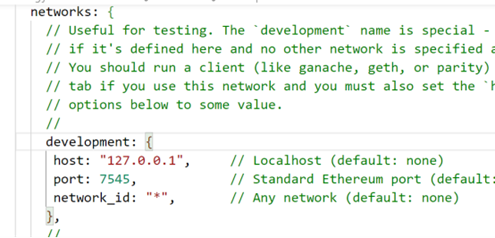
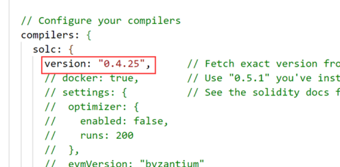

1. 创建Helloworld-solidity目录，并初始化
Mkdir Helloworld-solidity
truffle init
2. 修改truffle-config.js配置
配置连接：

修改solc版本：

3.添加部署代码
添加部署代码migrations/1_deploy_helloworld.js：
let helloworld = artifacts.require("HelloWorld");
module.exports = function(deployer) {
deployer.deploy(helloworld);
}
4.部署合约上链：
truffle migrate
5.验证区块高度发生变化并有相应合约地址